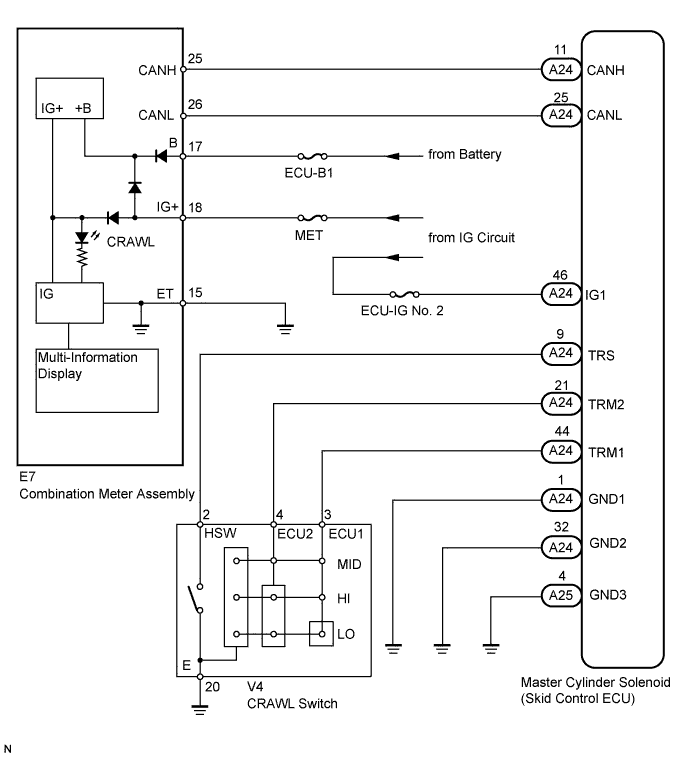

When CRAWL control starts after operating the CRAWL switch, the CRAWL indicator light turns on. When CRAWL control of the engine stops, the CRAWL indicator light begins blinking. When CRAWL control totally stops, the CRAWL indicator light turns off.
WIRING DIAGRAM

INSPECTION PROCEDURE
Refer to "CRAWL Indicator Light Remains On" (Click here).